Новая схема продаж, которую от вас скрывали
И почему мы снова и снова ищем секретный секрет
Содержание
Я её нашла. Ей лет двадцать, и всё это время она лежала на виду.
Если вы открыли статью ради секрета, с вами всё в порядке. Так устроена голова: обещание, что у кого-то есть то, чего вы не знаете, цепляет сильнее почти любого другого. Я только что этим воспользовалась. Почему это работает на всех, расскажу ниже. А дальше будет честно.
Похороны по расписанию
Каждые полгода в интернете что-то умирает.
Умерли вебинары. Умерли автоворонки. Умерли длинные тексты, потом внезапно вернулись. Теперь вот умерли холодные продажи с рилсов.
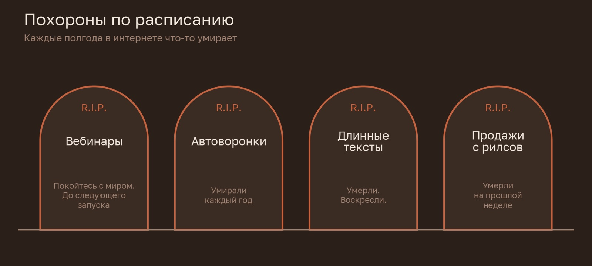
А на месте каждого покойника тут же появляется человек, который нашёл новую схему. Секретный секрет. Он уже всё проверил на себе, вам осталось только повторить.
Недавно я смотрела такой эфир у одного очень известного продюсера. Новая система продаж: не продавать слишком рано, писать в личку, звать на эфир, работать со старой базой и всё считать. Где-то на середине до меня дошло: восемь лет я продавала ровно так — через переписку, по воронке, считая каждый шаг. Просто не знала, что это новая система.
Я такая умная. Но почему-то, блэт, такая бедная!
При этом он прав, схема хорошая. Смешно другое: под конец эфира он сам говорит, что она будет работать, пока существует рынок. То есть это не новинка, а база, упакованная как открытие.
Не все, конечно, так делают. Но жанр узнаваемый, правда?
Отдельная у меня любовь — инстаграмный круговорот экспертов:
- Блог о непростой жизни.
- Сто тысяч подписчиков.
- Курс «Как я набрала сто тысяч на блоге».
- Курс о том, как продавать курс о блоге.
Змея ест свой хвост и параллельно ведёт по нему прогрев.
Добавим алгоритмы. Вы один раз досмотрели рилс «как я заработала миллион на запуске», и теперь таких экспертов в ленте сорок в день. А тех, кто купил их курс и ничего не заработал, лента не покажет: про это рилсы не снимают.
Так появляется ощущение, что разобрались все, кроме вас. И это ощущение отлично продаётся.
Поверьте, я знаю как это работает, и сама двадцать лет в продажах и восемь лет развивала свою онлайн-школы. Только, «всё изменилось» не кричала, а все восемь лет топила за базу. Чем это для меня закончилось, расскажу дальше, и это не история про то, какая я молодец.
Нобелевская премия за человеческую глупость?
Почему люди на это ведутся? Удобный ответ — потому что глупые. Он неправильный.
Нобелевский лауреат Даниэль Канеман нашёл две вещи, которые объясняют ленту лучше любого маркетолога.
Первая: мы считаем что-то массовым, если легко вспоминаем примеры. А лента подкидывает их без остановки.
Вторая: потерять мы боимся сильнее, чем радуемся такой же выгоде. Поэтому «всё изменилось, а вы отстаёте» продаёт лучше, чем «вот как заработать больше».
И это не новая беда: ещё в 1971 году, задолго до лент и рилсов, экономист Герберт Саймон написал, что богатство информации порождает бедность внимания.
Поэтому приём со «всё изменилось» работает всегда. Но каждый следующий раз чуть хуже: третью секретную схему человек читает уже с прищуром. Ему больше не нужно, чтобы его убеждали, что рынок изменился. Ему нужно, чтобы наконец хоть что-то сработало.
Методы продаж не умирают каждый сезон. Умирает другое: рынок взрослеет, и то, что работало на одной его стадии, перестаёт работать на следующей. Разочарование покупателей — не случайность и не характер аудитории. У взросления рынка есть довольно понятные стадии.
Спойлер, раз уж я обещала новую схему: она состоит из вещей, которым лет двадцать. Доверие, разговор, работа с теми, кто уже купил. Новое в ней только одно: раньше без них можно было обойтись, а теперь нельзя. Дальше — почему.
Гориллы, мартышки и главная улица
В 1991 году американский консультант Джеффри Мур выпустил книгу «Преодоление пропасти», а через четыре года — «Внутри торнадо». Он объяснял, почему одни технологические компании взлетают, а другие умирают, едва начав расти. Мур писал про софт и железо, но его модель неожиданно точно объясняет, что происходит с инфобизом, и не только с ним. Пользуюсь ей вольно, технари, не бейте.
Сначала продукт покупают энтузиасты. Им интересно новое само по себе, они готовы терпеть сырость и разбираться сами.
Потом наступает пропасть. Энтузиасты уже купили, а обычные люди ещё не верят. Многие проекты в этой яме и умирают.
Те, кто выбрался, начинают расти нишами, а потом случается торнадо. Спрос взрывается, все бегут покупать, рынок растёт быстрее, чем появляются продавцы. В торнадо выстраивается иерархия. Наверху горилла — лидер, вокруг которого всё крутится. Рядом шимпанзе, которые пытаются отобрать у неё место. Внизу мартышки: они копируют гориллу и продают то же самое дешевле.
После торнадо рынок выходит на главную улицу. Взрывного роста больше нет. Покупатели знают, что им нужно, видели десяток предложений и обещаниями не впечатляются. Расти можно, но иначе: за счёт специализации, качества и тех, кто уже купил.
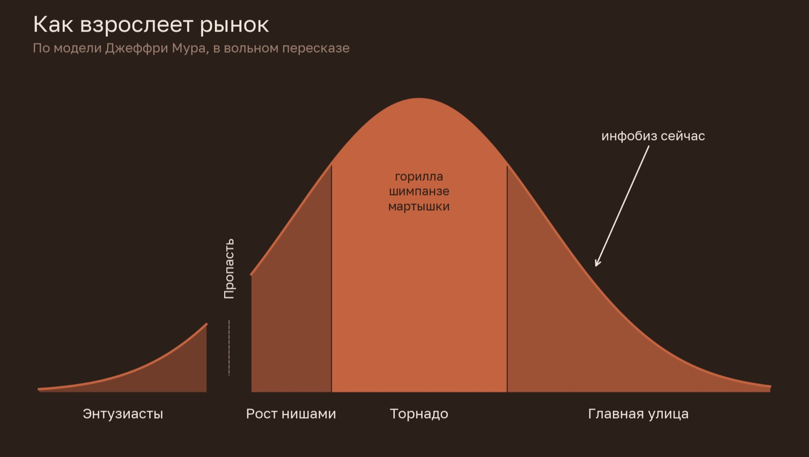
Инфобиз на главной улице
Энтузиасты — те, кто покупал первые онлайн-курсы, когда это казалось странным и смелым. Торнадо — годы бума, когда онлайн-обучение покупали все и у всех, а запустить курс мог любой человек с телефоном и подписчиками. Гориллы — крупные школы и звёзды, которые собирали миллионы на запусках. Мартышки — тысячи курсов «я сделал, и вы сможете», собранных по одному шаблону. Моя школа в этой иерархии точно не была гориллой.
А сейчас главная улица. По данным Smart Ranking, у ста крупнейших компаний онлайн-образования рост выручки за два года замедлился с 32% до 12% в год. У маленьких школ ещё хуже: на GetCourse, где работает больше двух третей онлайн-школ России и СНГ, за девять месяцев 2025 года заработали на 5% меньше, чем годом раньше. По-простому: пирог больше не растёт.
И это не только про курсы. Посмотрите на бьюти. По данным 2ГИС, за три года заведений красоты в городах-миллионниках стало больше на четверть с лишним. А клиентов больше не стало: по данным Сбера, в первом квартале 2026 года покупок в салонах было на 7% меньше, чем годом раньше, хотя средний чек вырос. Мастеров всё больше, клиентов столько же. Это главная улица, просто без вебинаров.
Не каждый рынок проходит через торнадо. Холодильники ломаются примерно одинаково каждый год, и бума на ремонт не бывает. Но возраст есть и у таких рынков: меняется, сколько вокруг конкурентов, где клиенты их ищут и чему верят.
Правила главной улицы
В торнадо можно продавать обещанием. Люди хотят продукт, ещё не разочарованы, и громкий оффер срабатывает. На главной улице обещаниям не верят. Здесь продаёт другое: доверие, понятная польза, повторное касание, разговор, работа с теми, кто уже купил. То есть ровно то, что сейчас подают как новую систему продаж.
Причём доверие никуда не исчезло, люди просто стали выбирать, кому его отдавать. В мировом исследовании Edelman две трети опрошенных говорят, что доверяют брендам, и это больше, чем три года назад. Доверия не стало меньше. Его стало сложнее получить.
Эти методы не новые. Просто в торнадо без них можно было обойтись. А теперь нельзя.
И «секретный секрет» в этой картине — привычка торнадо, которую принесли на главную улицу. Мартышка продолжает кричать, хотя все, кто был готов поверить крику, уже купили.
Как понять, на какой стадии ваш рынок
Посмотрите на пять признаков. Чем больше совпало, тем взрослее ваш рынок.
- Конкуренты обещают то же, что и вы, почти теми же словами.
- Под рекламой в вашей нише чаще пишут «опять очередной», чем задают вопросы.
- Длинное и дорогое покупают всё реже, короткое и понятное — чаще.
- Чтобы привлечь нового клиента, приходится тратить всё больше.
- То, что работало два-три года назад, даёт всё меньше, хотя вы ничего не меняли.
Совпало одно-два — рынок, скорее всего, ещё растёт или вы нашли в нём свою нишу. Пользуйтесь моментом, но запоминайте, что именно у вас работает и почему.
Совпало три и больше — ваш рынок повзрослел. Тогда главный вопрос не «какой инструмент добавить», а «что в моей системе всё ещё работает по правилам торнадо». Начните с двух вопросов к себе: сколько продаж приходится на тех, кто уже покупал или кого привели прежние клиенты, и какую тактику вы не пересобирали дольше двух лет.
Откуда я это знаю: что показывают цифрыПосмотреть цифры
Чтобы проверить это не на ощущениях, я открыла Wordstat — сервис Яндекса, который показывает, сколько раз люди ищут что-то в поиске, — и посмотрела, как менялись запросы за шесть лет.
Сразу оговорка, иначе графики врут. Изменился сам поиск: мастеров всё чаще ищут на картах, на Авито, во ВКонтакте, спрашивают у нейросетей. Плюс люди экономят. Поэтому сначала я посмотрела на скучную нишу без курсов и прогревов — ремонт стиральных машин. Запросов стало вдвое меньше. Вряд ли стиральные машины стали ломаться в два раза реже. Значит, минус половина — это просто фон.
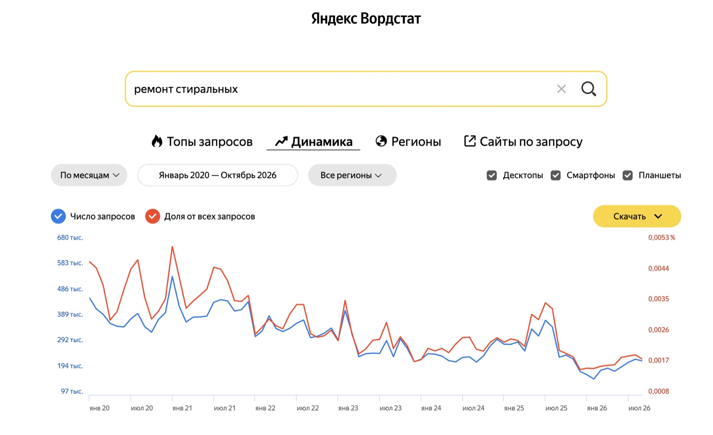
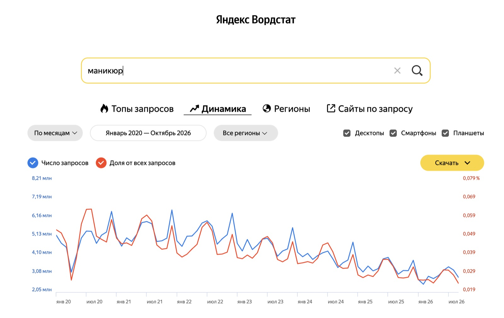
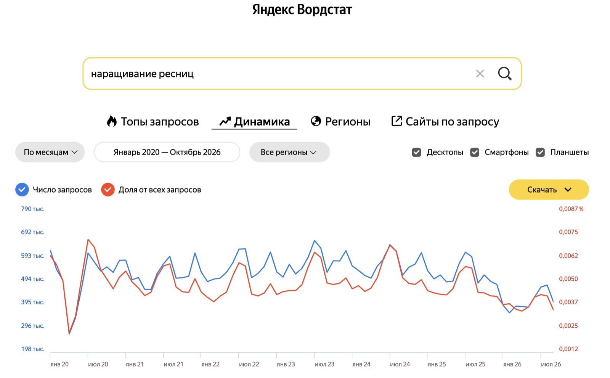
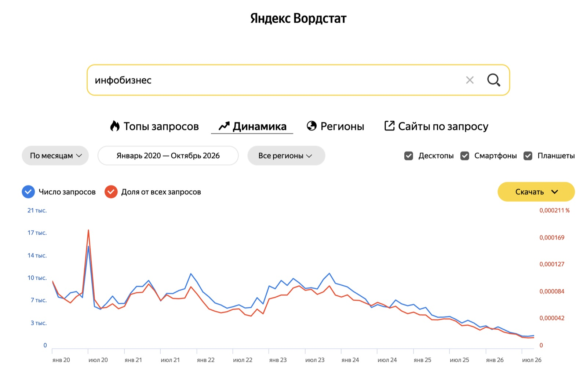
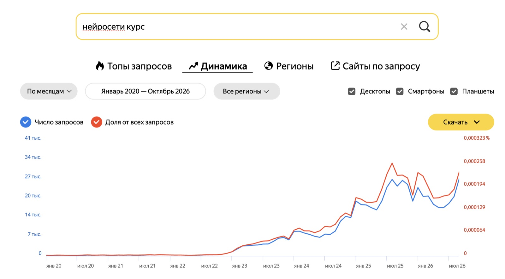
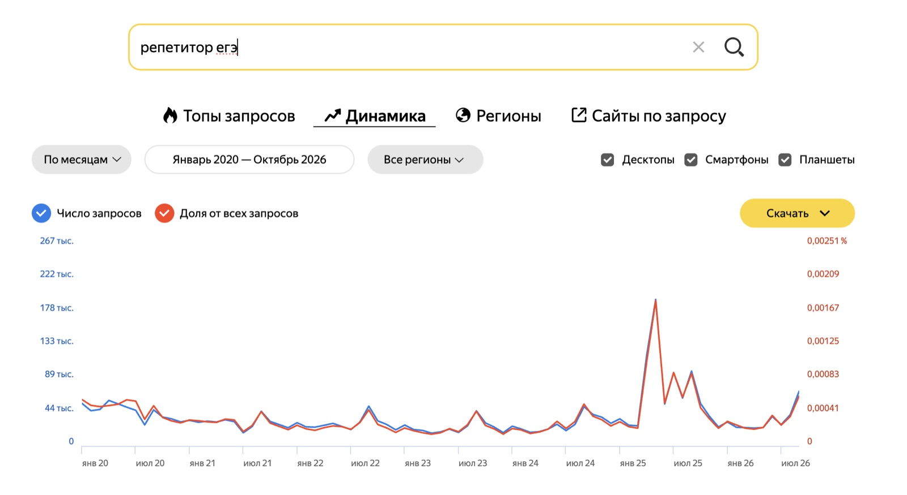
Графики листаются вбок →
В бьюти одна сфера, а судьбы разные: маникюр просел вместе с фоном, а наращивание ресниц держится заметно лучше. Так что «бьюти падает» ничего не говорит про вашу нишу.
А вот «инфобизнес» падает гораздо глубже фона: запросов примерно в шесть раз меньше, чем на пике, и с 2024 года ни одного отскока. Интерес уходит от самого слова.
Зато «нейросети курс» — торнадо в прямом эфире: от нуля в 2022 году до десятков тысяч запросов в месяц. И деньги это подтверждают: оборот школ, которые учат работе с ИИ, за год вырос почти вдвое.
А «репетитор ЕГЭ» в поиске — почти ровная линия, хотя оборот онлайн-школ подготовки к экзаменам за год вырос почти на треть. Учеников столько же, растёт чек. Поиск видит не всё.
Вывод из графиков простой: «рынок падает» ничего не говорит про ваш бизнес, пока вы не посмотрели на свою нишу. Одни рынки сжимаются, другие растут, и всё это одновременно. А Wordstat — только один из признаков: там, где покупают у людей, которым доверяют, поиск видит не всё.
И ещё одна вещь, которую видно только изнутри. В нашей аналитике было видно, сколько в среднем приносил один подписчик воронки в разных нишах. Курс один, воронка одна, а разница почти в шесть раз: подписчик из рукоделия или тату приносил около 960 рублей, из маникюра — около 200, бровист — 174.
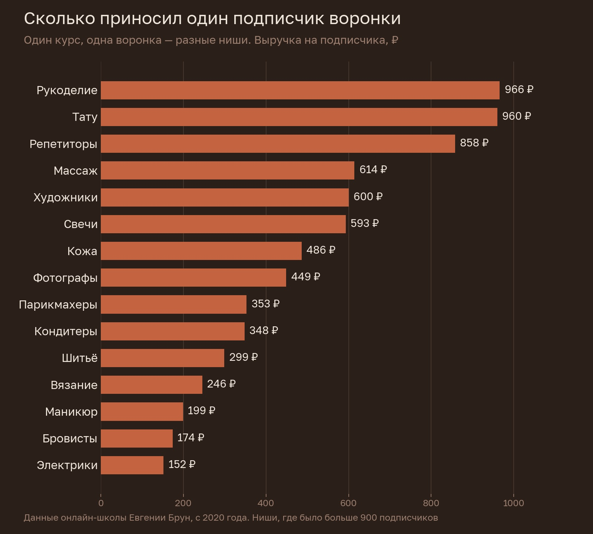
Даже с одним и тем же продуктом ниши живут по разным законам. Поэтому схема, которая у кого-то сработала, вашей нише может просто не подойти.
Покупатель стал другим
Рынок взрослеет не сам по себе: вместе с ним меняется человек, который покупает. По данным Росстата, во втором квартале 2026 года реальные доходы людей выросли почти в семь раз слабее, чем годом раньше. Люди реагируют предсказуемо: по данным ЦБ, разбивают крупные траты на этапы и ищут выгодные предложения, а по данным Сбера, покупают реже, но тратят больше за раз. Траты в кафе и ресторанах, например, выросли на 12%, а гостей почти не прибавилось.
Бизнесу от этого не легче. По опросу «Опоры России», почти половина предпринимателей закончили 2025 год без прибыли или в убыток. А в бьюти о падении спроса в начале 2026 года сообщили четверо из пяти опрошенных.
В онлайн-образовании то же самое. На GetCourse доля дорогих курсов, от 100 тысяч рублей, в выручке школ меньше чем за год упала с трёх четвертей до половины. Сама платформа объясняет это тем, что людям стало сложнее оформлять рассрочки.
Получается, человек не перестал покупать. Он стал покупать иначе: осторожнее, частями, с понятной ценой входа. Длинные дорогие программы по-прежнему продаются, но к ним дольше идут, и им нужны очень сильная экспертиза и очень конкретный результат.
Можно ли продавать без дожимов
Теперь неудобный вопрос, который я задаю себе сама. Если все устали от прогревов и дедлайнов, почему они до сих пор работают?
Потому что никуда не делась психика. Страх потерять, желание заглушить тревогу, привычка ничего не менять — всё это работает на любом рынке, что бы люди ни говорили в опросах. Главный конкурент любой продажи вообще не другой эксперт, а «ничего не делать». Поэтому без напоминаний, без причины решиться сейчас и без прямого предложения покупают очень мало. Это правда, и делать вид, что можно продавать одним полезным контентом, я не буду.
Но кое-что изменилось. Денег у людей меньше, ошибка стоит дороже, и человек вынужден думать, нужно ли ему это на самом деле. Он внимательнее читает предложение, сравнивает, ищет подвох. А приёмы он уже выучил наизусть. Когда нагнетание становится слишком сильным, оно не толкает к покупке, а отталкивает. Фальшивые дожимы стареют так же, как любые тактики: это привычка торнадо, которая на главной улице раздражает.
Поэтому вопрос не в том, использовать ли триггеры. Вопрос в том, правда ли то, на что они опираются. У каждого приёма есть честная и нечестная версия.
Срочность
Честно«После пилота цена вырастет: я увижу, сколько на самом деле стоит эта работа».
Нечестнотаймер, который обнуляется, если обновить страницу.
Дефицит
Честно«Я беру четырёх клиентов в месяц, больше не вывожу».
Нечестно«Осталось два места» — уже полгода.
Кейсы
Честноистория одного клиента с его разрешения, даже без красивых процентов.
Нечестно«Тысячи довольных учеников» без единого имени.
Цена бездействия
Честно«Давайте посчитаем, сколько вы теряете каждый месяц, пока база лежит без дела».
Нечестно«Через год вас не будет на рынке».
Граница простая: если ради продажи приходится врать, это уже не триггер, а враньё.
И нужно всегда продолжать разговор. На главной улице покупают у тех, кто остаётся рядом, а не у тех, кто громче всех кричал в день запуска.
Я тоже буду напоминать о себе — в каналах, в рассылке, в личных сообщениях. Не потому, что это дожим, а потому, что у людей много дел и они забывают. Разницу между напоминанием и давлением вы почувствуете сами.
Значит, что-то всё-таки умирает? Да. Только не то, что обычно хоронят.
Что умирает, а что нет
Если разложить всё, что хоронят в интернете, получается три слоя. И умирают они с разной скоростью.
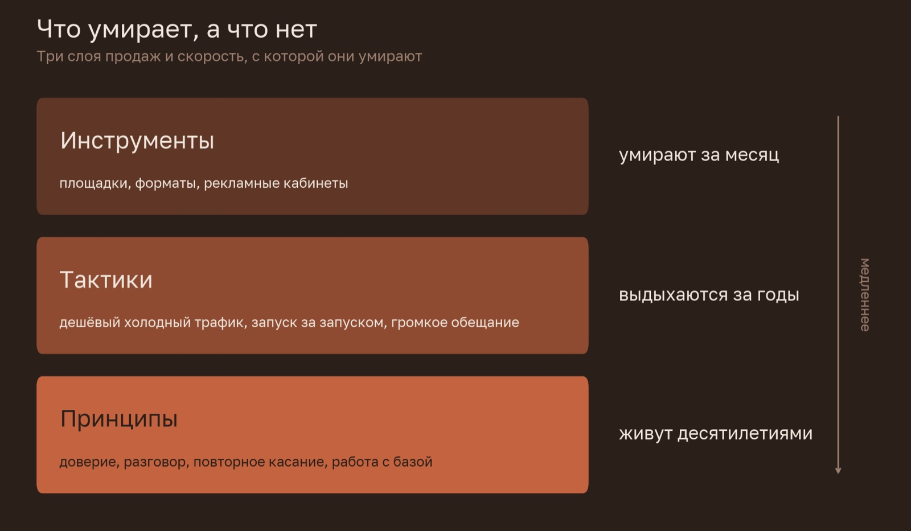
Инструменты умирают быстро
Первый слой — инструменты. Площадки, форматы, рекламные кабинеты, функции. Они умирают быстро, иногда за один месяц, и обычно не потому, что рынок повзрослел.
Самый наглядный пример я нашла в Wordstat. Запрос «продвижение инстаграм» несколько лет держался на высоком уровне. В марте 2022 года график просто обрывается, по известным нам всем причинам, и сейчас запросов примерно в двадцать раз меньше, чем было. С 1 сентября 2025 года в силу вступил закон, который запретил рекламу на ресурсах с ограниченным доступом, и инструмент добили окончательно.
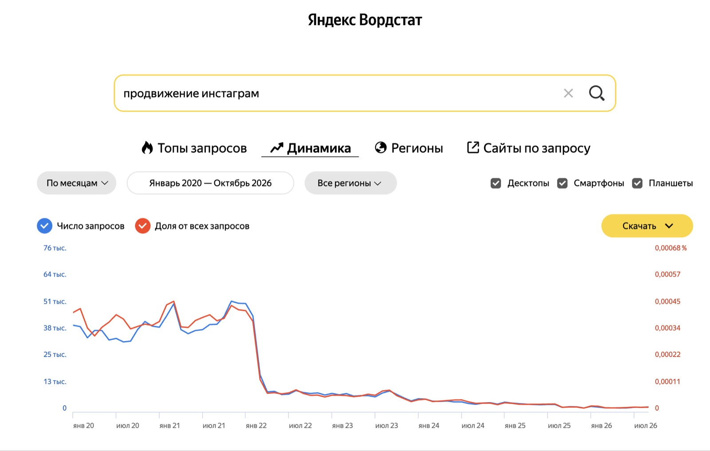
А теперь график запроса «продвижение ВК». В марте 2022-го резкий скачок, потом спад, но не до прежнего уровня: спрос закрепился примерно на треть выше, чем был. Люди никуда не делись. Они просто перешли в соседний канал.
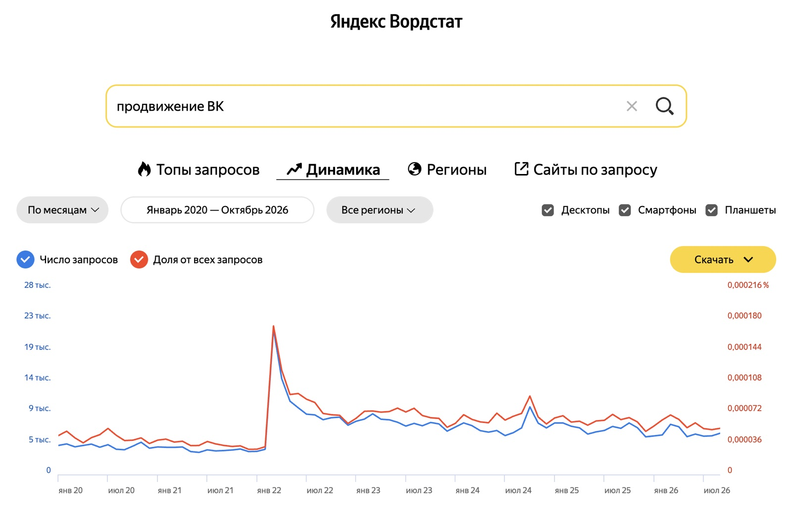
Это видно и по заявкам. По данным GetCourse, в мае 2025 года онлайн-школы получили из ВКонтакте почти на четверть больше лидов, чем годом раньше, а из Instagram — на пятую часть меньше.
Инструмент убило внешнее решение, и предсказать это было нельзя. Защититься можно только одним способом: не держать весь бизнес на одной площадке. Говорю это как человек, у которого восемь лет был один канал трафика. Мне повезло, что это был ВКонтакте.
Тактики выдыхаются
Второй слой — тактики. Это способы, которые отлично работают на определённой стадии рынка. Дешёвый холодный трафик как главный рычаг. Один продукт, который продаётся по кругу одной и той же базе. Запуск за запуском. Громкое обещание на холодную аудиторию. Первые три пункта — это буквально моя школа.
Тактики не умирают в один день. Они выдыхаются. Конверсия падает понемногу, люди хуже приходят на запуски, слабее вовлекаются, и долго кажется, что это временно.
У нас так было с автоворонкой, которую мы три года не пересобирали. В таблице по месяцам считалась конверсия в продажу с холодного трафика. Сначала она держалась около 1,2%. Потом 0,9%. Потом 0,8%. Цифры маленькие, но разница большая: при той же рекламе продаж становилось на треть меньше. Летом 2024 года стало понятно, что это уже не временно.
Честно, я не могу разделить, сколько здесь было от рынка, а сколько от самой воронки: любая воронка со временем выгорает. Но мы ещё долго крутили то же самое, потому что раньше же работало.
Работало. На другой стадии рынка.
Принципы не умирают
Третий слой — принципы. Доверие. Разговор с человеком. Повторное касание. Работа с теми, кто уже купил. Понимание, сколько стоит клиент и сколько он приносит. Эти вещи не умирают, их просто можно было не замечать, пока рынок рос и деньги приходили и так.
Сейчас не заметить их уже трудно. В третьем квартале 2025 года больше половины продаж образовательных продуктов на GetCourse пришлись на повторные покупки. Больше денег уже приносят те, кто купил второй раз, чем те, кто пришёл впервые.
Да, есть ниши, где второй покупки почти не бывает. Холодильник чинят раз в несколько лет, свадебное платье покупают один раз. Но и там принцип тот же, просто работает через других людей: рекомендации, отзывы, партнёры. Мастер по ремонту живёт сарафаном, салон свадебных платьев — фотографами, ведущими и площадками, которые отправляют к нему своих клиентов. В таких нишах вторая продажа — это не тот же человек, а тот, кого он к вам привёл.
Вот почему «новая схема» звучит как новая. Это принцип, который на главной улице стал обязательным, а в торнадо был необязательным.
А теперь признание. Про то, что работать нужно с теми, кто уже купил, я знала все восемь лет своей школы. И делала наоборот.
Моя главная ошибка
Восемь лет я продавала один курс. В нём было всё, что нужно человеку, чтобы продвигаться самому: понимание своей аудитории, работа с клиентской базой, продажи, оформление, реклама. Где-то, может быть, не очень глубоко, но целиком.
Человек покупал его один раз. Получал бессрочный доступ. А я больше пяти лет бесплатно обновляла уроки под каждое изменение ВКонтакте.
Люди выходили довольные. И второй раз им было у меня нечего купить.
Пока трафик был дешёвым, это не мешало. Новые люди приходили, покупали, и экономика сходилась. Когда новые люди стали дороже, оказалось, что зарабатывать на тех, кто уже пришёл, не на чем. А те, кто делил то же самое на несколько продуктов и продавал их одному человеку много раз, в это время спокойно растили повторные продажи.
Я долго считала это своей честностью. А это была просто плохая архитектура продукта.
И вывод здесь не в том, что «надо было давить и дожимать». Честность и продуктовая матрица — не противоположности. Можно не обещать чудес и при этом дать человеку понятный следующий шаг.
Мы пробовали делать новые продукты. Первый раз их покупали наши же старые клиенты, а второй раз уже не хотели: продукты не попадали в то, что людям было нужно. Не была выстроена правильно логика продаж разных продуктов. Так что продуктовая матрица — это не только и не всегда нарезать продукт или курс на кусочки. Это понять, что ещё нужно тем, кто у тебя уже купил. И как ты это будешь продавать.
Поэтому сейчас я выступаю за продуктовую матрицу. Простая точка входа. Короткий продукт, который решает один конкретный запрос и даёт результат. Следующий шаг для тех, кому понравилось. И путь, по которому клиент к вам возвращается. Для мастера это может значить рост не за счёт цены, а за счёт новых услуг или людей, которые работают вместе с ним. Или за счёт обучения своему ремеслу: для многих мастеров это и есть следующий шаг, когда руки и часы закончились.
Что сделать прямо сейчас
Так что же на самом деле умерло? Стадия рынка, на которой без доверия и работы с базой можно было обойтись. Секретного секрета у меня нет. Есть семь вещей, которые стоит сделать.
- Прежде чем покупать новый инструмент, разберитесь, на какой стадии ваш рынок. В торнадо и на главной улице работают разные правила, и чужая схема с другой стадии может вам просто не подойти.
- Не держите бизнес на одной площадке. Инструмент может исчезнуть за месяц, и никакая стратегия этого не предскажет.
- Посмотрите, какие свои тактики вы давно не пересобирали. Если конверсия падает понемногу и кажется, что это временно, скорее всего, это не временно.
- Опирайтесь на то, что не умирает: разговор с человеком, доверие, работа с теми, кто уже купил, понимание, сколько стоит клиент и сколько он приносит.
- Дайте клиенту понятный вход, следующий шаг и причину вернуться или привести к вам кого-то ещё. Это не про давление. Это про то, чтобы после первой покупки человек вернулся сам или посоветовал вас другим.
- Сделайте что-нибудь с предыдущим курсом, прежде чем покупать следующий.
- И относитесь с подозрением к любому «всё изменилось». Включая эту статью.
Почему со стороны видно лучше
Сейчас любой за пять минут получит от нейросети пост, план или разбор. Информация почти ничего не стоит.
Но нейросеть отвечает на тот вопрос, который вы ей задали. А изнутри собственного бизнеса мы чаще всего задаём не тот вопрос. Спрашиваем, как поднять охваты рилсов, когда дело в том, что клиенту просто нечего купить у нас второй раз.
Бывает и по-другому, и это я знаю по себе. Помните мою историю с одним курсом? Я видела эту ловушку, но не знала, как из неё выйти, а на выход не хватало ресурсов. И всё это пока работало, так зачем ломать то, что приносит деньги?
Это, кстати, самый частый потолок у тех, кто уже продаёт. На текущую работу уходят все силы, а на то, чтобы перестроиться, их не остаётся. Продажи, контент, решения — всё держится на вас. Изнутри это выглядит как «нет времени», а на деле это устройство бизнеса.
Нейросеть мне бы тут не помогла. Ответ «нужна продуктовая матрица и больше каналов» я знала и сама. Мне не хватало другого: взгляда со стороны, который помог бы выбрать, с чего начать с теми ресурсами, что есть, и не дал бы откладывать.
Со стороны такие вещи видно быстрее. Однажды ко мне за консультацией пришла владелица спа-центра. У неё был маркетолог, деньги уходили в несколько рекламных каналов сразу, но что из этого работает, никто не считал. Чистую прибыль тоже: подробного финансового учёта не было. А в начале разговора она между делом сказала, что у неё лежит «мёртвый груз» — клиентская база, с которой никто не работает.
Я ответила, что это не мёртвый груз. Это мешок с деньгами.
Дальше мы разобрали, что с этой базой делать: нормально вести CRM, настроить автоматические сообщения после посещения — спросить, как человек себя чувствует, — и раз в три месяца запускать акции для тех, кто уже у них был. Я показала, как может выглядеть простая таблица доходов и расходов, и с того дня они начали её заполнять. Обсудили, какие рекламные каналы стоит тестировать, а какие можно отключить.
Они всё это внедрили и перестали платить за каналы, которые не окупались.
Оборот и повторные обращения выросли. А от внешнего маркетолога в итоге отказались.
Никакого секретного секрета. Просто взгляд со стороны на то, что лежало у человека под носом.
Этим я и занимаюсь. В продажах с четырнадцати лет: от промоутера и продавца-консультанта в Адидасе до крупных лизинговых сделок. Потом как маркетолог выстраивала продажи и рекламу больше чем в тридцати нишах, от школы танцев до тату-студий. А восемь лет в своей онлайн-школе разбирала бизнесы мастеров и микропредпринимателей: каждый месяц проводила эфиры с разборами и многих доводила до результата. Поэтому я вижу бизнесы в самых разных нишах и на самых разных стадиях.
И последнее, раз уж мы договорились быть честными.
Эта статья — тоже часть воронки. Почти весь бесплатный полезный контент в интернете существует, чтобы что-то продать, и мой не исключение. Мне сейчас нужно как можно больше разговоров с людьми, у которых есть свой бизнес: так я нахожу интересные проекты и тех, с кем хочется работать вместе.
Воронка продаж — это нормально. Ненормально, когда старую базу заворачивают в новую обёртку и продают как секрет, который всё сделает за вас.
Секрета здесь не было. Были модель, цифры и пара моих ошибок. Подходит ли вам такой формат общения, решать вам.
Если хочется посмотреть на свой бизнес со стороны, приходите на диагностику. Это разговор о вашей ситуации: что происходит с продажами, на какой стадии ваш рынок и что стоит проверить в первую очередь. На выходе у вас будут несколько главных гипотез и понимание, с чего начать.
Диагностика для тех, у кого уже есть продукт, клиенты и продажи и кто упёрся в потолок, в команду или в себя.
Источники
- Даниэль Канеман, «Думай медленно… решай быстро».
- Herbert Simon, «Designing Organizations for an Information-Rich World», 1971.
- Джеффри Мур, «Преодоление пропасти» и «Внутри торнадо».
- Smart Ranking: выручка топ-100 edtech-компаний за 2025 год («Коммерсантъ»).
- GetCourse: выручка онлайн-школ за девять месяцев 2025 года и повторные продажи (Skillbox Media).
- GetCourse: аналитика рынка онлайн-образования, май 2025.
- 2ГИС: индустрия красоты в городах-миллионниках, сентябрь 2026 (Retail.ru).
- «Сбер2B аналитика»: салоны красоты, первый квартал 2026 (ТАСС).
- Edelman Trust Barometer 2025, Special Report: Brand Trust.
- Федеральный закон № 72-ФЗ от 7 апреля 2025 года.
- Росстат и ЦБ: доходы и потребительское поведение, 2026 (AdIndex).
- СберАналитика: расходы в общепите, январь–ноябрь 2025.
- GetCourse: средний чек и доля дорогих курсов, 2025 (Skillbox Media).
- «Опора России»: опрос предпринимателей, 2026 («Инк.»).
- GetCourse: обороты онлайн-школ по направлениям, 2025 («Инк.»).
- GetCourse: онлайн-подготовка к ЕГЭ и ОГЭ, 2025/26 учебный год (ТАСС).
- Яндекс Wordstat: динамика запросов, январь 2020 — октябрь 2026, все регионы.